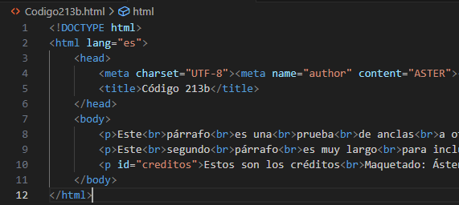

Párrafo 1
Esto es
una prueba
que quiero hacer
para comprobar
los anclas
a diferentes
sitios
de mi página
Párrafo 2
Pues este
es otro
párrafo
de longitud
considerada
para que
ocupe mucho espacio
para ver los saltos
con los anclas
Párrafo 3
Vuelvo
a repetir
la misma acción
para conseguir
un tercer
párrafo grande
|  | |
| Ir a créditos | Ir a créditos de la página 213b |
Créditos:
Maquetado: Áster